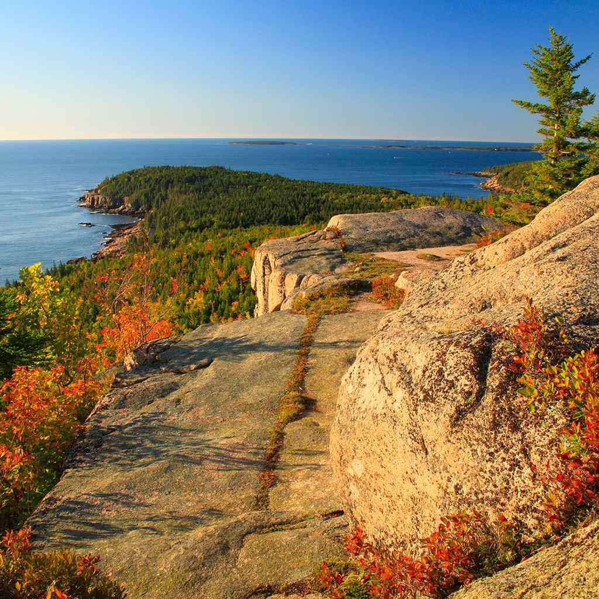
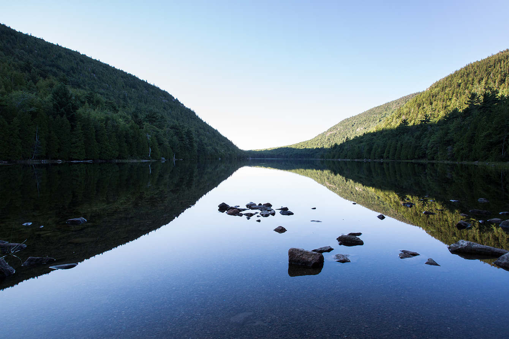

Acadia National Park is an American national park located along the mid-section of the Maine coast, southwest of Bar Harbor. The park preserves about half of Mount Desert Island, part of the Isle au Haut, the tip of the Schoodic Peninsula, and portions of 16 smaller outlying islands. It protects the natural beauty of the rocky headlands, including the highest mountains along the Atlantic coast. Acadia boasts a glaciated coastal and island landscape, an abundance of habitats, a high level of biodiversity, clean air and water, and a rich cultural heritage.
The park contains the tallest mountain on the Atlantic Coast of the United States (Cadillac Mountain), exposed granite domes, glacial erratics, U-shaped valleys, and cobble beaches. Its mountains, lakes, streams, wetlands, forests, meadows, and coastlines contribute to a diversity of plants and animals. Woven into this landscape is a historic carriage road system financed by John D. Rockefeller Jr.[4] In total, it encompasses 49,075 acres (19,860 ha; 76.680 sq mi; 198.60 km2) as of 2017.
Recreational activities from spring through autumn include car and bus touring along the park's paved loop road; hiking, bicycling, and horseback riding on carriage roads (motor vehicles are prohibited); fishing; rock climbing; kayaking and canoeing on lakes and ponds; swimming at Sand Beach and Echo Lake; sea kayaking and guided boat tours on the ocean; and various ranger-led programs. Winter activities include cross-country skiing, snowshoeing, snowmobiling, and ice fishing. Two campgrounds are located on Mount Desert Island, another campground is on the Schoodic Peninsula, and five lean-to sites are on Isle au Haut. The main visitor center is at Hulls Cove, northwest of Bar Harbor. Park visitation has been steadily increasing in Acadia over the past decade, with 2021 seeing a record count of 4.07 million visitors.[5].
The 27-mile (43 km) Park Loop Road leads to many scenic viewpoints along the coast, through forests and to the top of Cadillac Mountain.[13] The road traverses the eastern side of Mount Desert Island in a one-way, clockwise direction from Bar Harbor to Seal Harbor, passing features such as the Tarn (a pond), Champlain Mountain (location of a popular, exposed cliffside trail named Precipice),[15][16][17] the Beehive (another, smaller mountain), Sand Beach (a saltwater swimming area), Gorham Mountain, Thunder Hole (a crevasse into which waves crash loudly), Otter Cliff, Otter Cove, Seal Harbor, Jordan Pond, Pemetic Mountain, the Bubbles, Bubble Rock, Bubble Pond, Eagle Lake, and the side road to the summit of Cadillac Mountain. Some of the island's west side features include Echo Lake and beach (a designated freshwater swimming area), Acadia Mountain, Beech Mountain, Long Pond, and Seal Cove Pond. Bass Harbor Head Light is situated atop a cliff on the southernmost tip of the west side of the island.[6] Baker Island Light and Bear Island Light are the other two lighthouses managed by Acadia[18].
Fourteen great ponds and ten smaller ponds provide habitat for many fish and waterfowl species. More than 20% of the park is classified as wetland. Marshes and swamps form the transition between terrestrial and aquatic environments, maintaining biodiversity by providing a habitat for a wide range of species. Native wildlife frequent wetlands alongside species that are nesting, overwintering or migrating, such as birds along the Atlantic Flyway.[54] Wetlands are composed of 37.5% marine (sea water), 31.6% palustrine (stagnant water), 20% estuarine (coastal, brackish water), 10.7% lacustrine (freshwater lakes and ponds), and 0.2% riverine (flowing streams). Approximately 53.6 mi (86.3 km) of perennial streams and 47.3 mi (76.1 km) of intermittent streams flow through the park, while about 50 mi (80 km) of shoreline surround 110 lakes and ponds encompassing 1,056.56 acres (427.57 ha; 1.65088 sq mi; 4.2757 km2).[4]
Trees commonly found in the mountains and dry, rocky places of the national park include gray birch, common juniper, jack pine, and pitch pine, while smaller trees, or shrub, species include green alder and pin cherry. Other common shrubs and flowering plants found in the mountains and rocky areas include alpine aster, bearberry, velvetleaf blueberry, bush-honeysuckle, black chokeberry, three-toothed cinquefoil, mountain cranberry, bracken fern, Rand's goldenrod, harebell, golden heather, mountain holly, black huckleberry, creeping juniper, sheep laurel, red raspberry, Virginia rose, mountain sandwort, bristly sarsaparilla, sweetfern, and wild raisin. Poverty oatgrass is the most common grass found in mountainous terrain.[55]